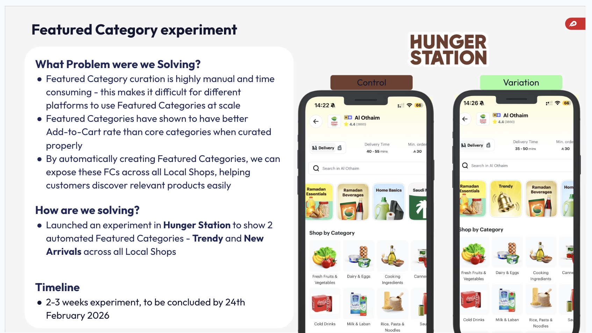
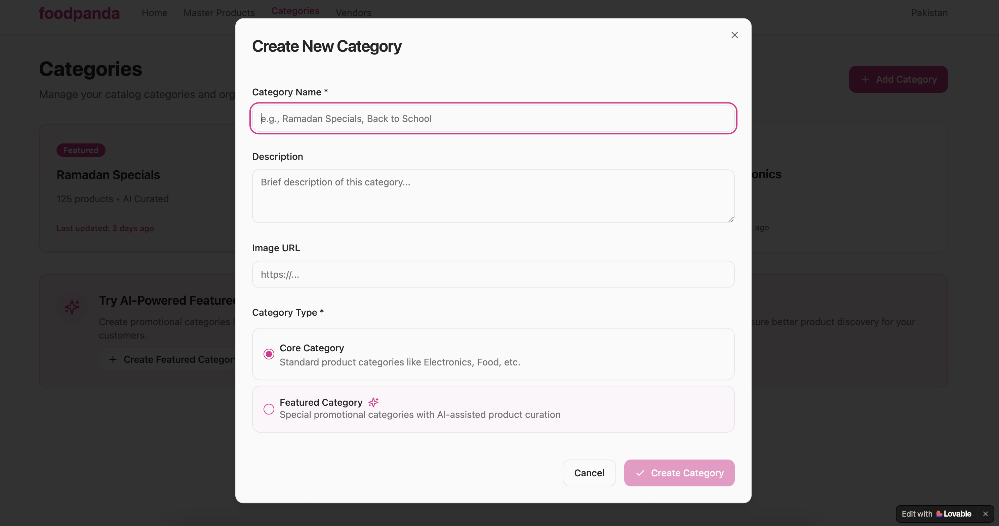
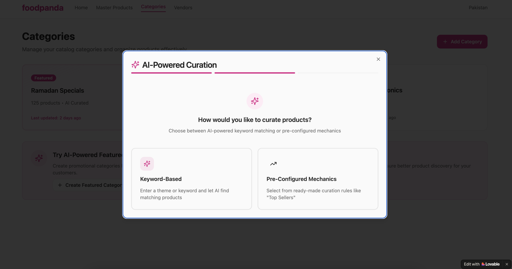
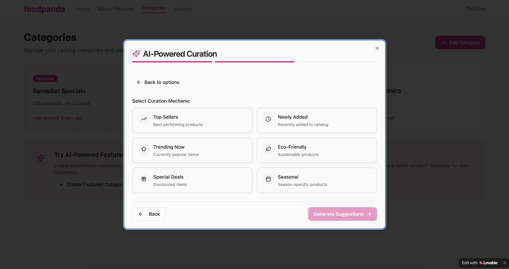
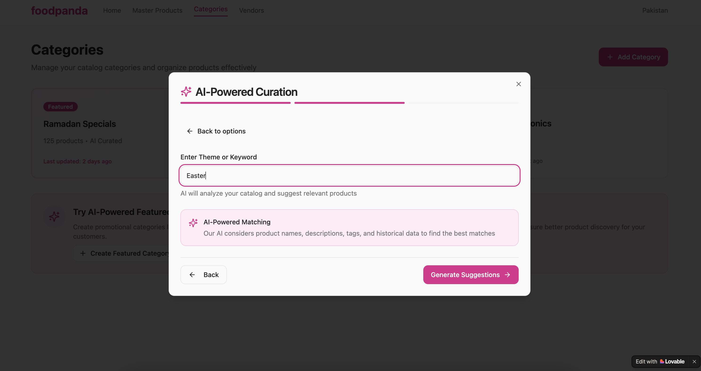
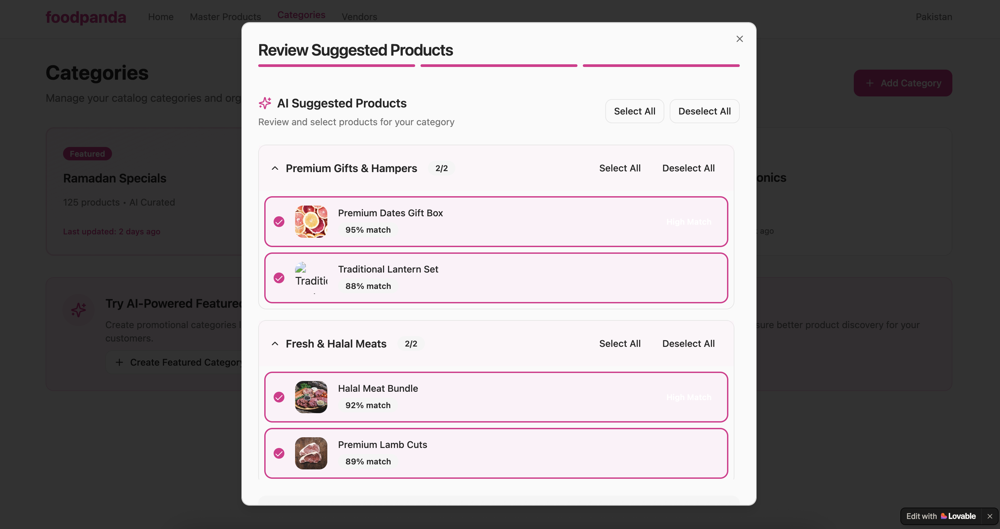

The Problem Worth Solving
Quick Commerce category navigation — Beverages, Dairy, Snacks, Fresh Produce — is optimised for the customer with intent. They open the app knowing they want oat milk, navigate to Dairy & Alternatives, and find it. The path is direct. This model works well for a significant share of sessions.
But a large share of sessions don't start with intent. A customer opens a shop, browses without a specific goal, and either converts on something that catches their eye or exits. Standard navigation is largely passive in these moments — it waits to be used rather than surfacing anything useful to the browsing customer.
Featured Categories already existed as a feature to address exactly this. Designed for manual curation by local and regional teams, they surfaced seasonal picks, trending products, and promotional collections above the standard category rail. Where they were used, they performed strongly — exactly the kind of contextual, inspiring surface that turns browsers into buyers.
When I looked at actual usage, only ~10% of partners globally had Featured Categories set up. The feature worked — but the manual curation required to populate it meant that 90% of partners were simply not using it at all.
The question I started with: can we automate FC population so that every partner gets the benefit — without any manual effort from local or regional teams?
Automating Featured Categories
Featured Categories are a special category type designed to inspire and recommend — surfacing seasonal picks, trending products, and promotional collections above the standard rail, across both local partner shops and Delivery Hero's own darkstores. The feature existed. The performance signal was clear. The problem was reach.
The experiment was built around a simple hypothesis: if we could populate FCs automatically using data-driven rules, we could unlock the feature for the 90% of partners who would never have them through manual curation alone. The first slice focused on two rule-based FC types:
Trendy — Products ranked by sales velocity over the last 30 days. What customers at this specific partner are actually buying right now, surfaced automatically.
New Arrivals — Products added to the partner's catalog in the last 30 days. Fresh stock surfaced the moment it's listed, with no manual intervention required.
Deliberately starting simple: two rules, clean data signals, no configuration burden on local teams. If automation could match or approach the performance of manually curated FCs, it would validate the approach for scaling to all partner types and more FC variants.

The Experiment: HungerStation, Saudi Arabia
We ran the validation experiment on HungerStation — one of the strongest Quick Commerce markets in the MENA region. The setup was a standard A/B test: Control (standard category navigation as-is) vs Variation (two Featured Categories — New Arrivals and Trendy — surfaced above the standard rail on the shop page for all Local Shop partners).
The visual change was deliberate and visible: in the Variation, customers landing on a Local Shop saw the FCs as the first scrollable content element above the DEAL ZONE and standard "Shop by Category" rail. The hypothesis was that the contextual positioning would increase category engagement and add-to-cart upstream of the standard navigation.
We ran the experiment in two iterations. The first iteration surfaced five issues that invalidated the initial signal before we could draw any conclusions. The second, after fixing each issue, gave us a clean read.
Finding What Was Broken
The first experiment ran for two weeks on HungerStation. As part of ongoing monitoring, I did manual spot-checks across partner pages — and found issues quickly. Rather than wait for end-of-experiment results, we stopped the experiment early, diagnosed each issue, and fixed them before relaunching.
Five issues were identified:
A broken experiment doesn't produce a neutral result — it produces noise. With tracking contamination affecting the control group and key partners showing missing or near-empty FCs, any metric movement would be uninterpretable. The right call was to stop, fix the foundation, and relaunch cleanly.
Fixing the Foundation
Each of the five issues was assigned an owner and resolved before the relaunch. The key fixes:
- Data infrastructure. The team responsible for catalog data built a separate curated table for Top Sellers — a reliable, clean data source replacing the ad-hoc query that had caused sparse product counts. This also ensured consistent FC availability across all Local Shop partners.
- Tracking verified and confirmed clean. The experiment was enabled for the internal team first; events were confirmed firing and captured correctly in our event tracking system. A traffic split analysis showed no contamination from the traffic allocation perspective.
- New Arrivals window extended to 30 days. Analysis showed that the 30-day window brought New Arrivals coverage across the vast majority of partners. We also enabled both FCs for all Local Shops, removing the conditional logic that had left some partners excluded.
- Subcategory ranking aligned to L1 ranking. Inside each FC, subcategories are now ranked the same way as top-level L1 categories — by popularity — so the most frequently browsed subcategories surface first.
A Clean Read — and What It Told Us
The second experiment ran for three weeks (one week excluded for data hygiene). The infrastructure was clean, tracking was confirmed, and both FCs were live across all Local Shop partners on HungerStation.
Featured Category ATC came in at ~12.42%, compared to ~35.21% in the Native Category — showing that the FC surfaces were engaging but converting at a lower rate than established browsing paths, as expected for a new surface with no personalisation yet applied.
"Flat" looked neutral on the primary metric. But there were two important pieces of context:
1. Flat with zero manual effort is a meaningful baseline. We delivered the same GMV and ATC without any catalog manager touching a single partner — that's a real operational win, not a null result.
2. The feature was buried. Multiple other Featured Categories were already live on the HungerStation app. Customers had to scroll past existing FCs to find Trendy and New Arrivals. A feature with compromised visibility can't drive incremental behaviour — the placement issue needed to be addressed before we could expect uplift on primary metrics.
The recommendation from Product Analytics was to ship it — the automated FCs were doing no harm — and improve in two dimensions: making FCs more targeted (data-driven product recommendations within the FC, not just rules) and improving FC placement (bringing the FCs closer to the top of the shop page so customers reach them without scrolling).
The Vision: AI-Powered Curation
Rule-based FCs — top sellers, new arrivals, 30-day windows — were the right starting point. Automatable, auditable, easy to explain to stakeholders. But they're a blunt instrument: the same products surface for every customer at every partner, regardless of their behaviour or preferences.
The North Star is a Featured Category that knows what to put in it. Instead of "all products added in the last 30 days," New Arrivals surfaces the specific products most likely to be relevant to this customer, based on their category history and basket patterns. Instead of "products ranked by aggregate sales velocity," Trendy surfaces items trending among customers with similar profiles — not just popular in aggregate, but relevant at the individual level.
I built a Lovable prototype to communicate this vision before engineering resources were committed — giving stakeholders something concrete to react to rather than a written spec.





Lovable prototype screens — click to expand. AI-powered Featured Category curation, built to communicate the vision and drive stakeholder alignment before engineering commitment.
AI-powered Featured Category curation — dynamically selecting which products appear in each FC for each customer, based on behaviour and context.
View Live PrototypeWhat I Owned as PM
- 0→1 product concept and strategy. Identified the discovery gap in standard Quick Commerce navigation, defined the two-type FC framework (rule-based vs occasion-based), and built the rationale that took this from a backlog idea to a funded experiment.
- Experiment design across both iterations. Defined hypothesis, metric selection (primary: Category ATC; guardrail: GMV per Customer), traffic allocation, and success criteria. Made the call to stop Iteration 1 early rather than read contaminated results.
- Cross-functional issue resolution after Iteration 1. Diagnosed all five issues — spanning data engineering, analytics tracking, and product logic — and drove resolution with Category Management, Product Analytics, and engineering before the relaunch. Owned the re-launch readiness checklist.
- Cross-platform vision and stakeholder alignment. Aligned product teams across 7 platforms (Foodpanda, Talabat, PedidosYa, HungerStation, Glovo, and others) on the FC roadmap and the AI-powered future state. The €4–5M scale estimate across all platforms was the anchor for that alignment conversation.
- Lovable prototype for the AI vision. Built the interactive prototype to make the AI curation concept tangible to engineering, design, and leadership — faster and more effective than a written document would have been.
What I Learned
- Data quality is a prerequisite, not a given. Iteration 1 taught us that launching on bad infrastructure produces noise, not results. Five separate issues — data gaps, tracking bugs, logic flaws — all needed to be resolved before any signal was interpretable. The right call was to treat the broken experiment as a QA exercise rather than a failed test.
- "Flat with no manual effort" is a different kind of win. Product teams are trained to look for upward movement on primary metrics. But for a new surface replacing a manual process, matching existing GMV at zero operational cost is a real baseline — not a failure. The next iteration improves on it; this one establishes that the foundation doesn't hurt.
- Placement is a first-class product variable. The Iteration 2 signal was suppressed partly because the FCs were buried below other featured content. Discoverability of the feature — where it sits in the page hierarchy — is as important as what the feature does. This is easy to underestimate when you're focused on what's inside the FC.
- A working prototype unlocks alignment faster than a document. Building the AI curation vision in Lovable gave stakeholders something concrete to react to — and to share with their own engineering teams — in a way that a written spec rarely achieves. The prototype became the shared artefact for cross-platform alignment.